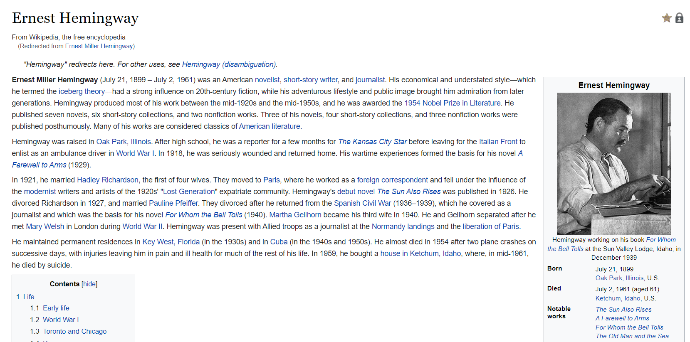

Biography has been online for many years and has become one of the most well-known sites out there for memoirs, interviews, and life stories.The People section has grown to thousands of entries and covers everyone from actors to scientists. When you click on a person's profile, you'll get a brief overview of their life, a list of “quick facts”, and information on their education, career, and personal life.
//

If you want information on famous people, you can never go too far wrong with the ubiquitous Wikipedia. If anyone has achieved something globally noteworthy in their lives, you can be almost certain that they will have an entry on the site.Of course, for the true giants of history, the entries can run to tens of thousands of words. But even for slightly less-famous people, you will still be able to find plenty of information.
//